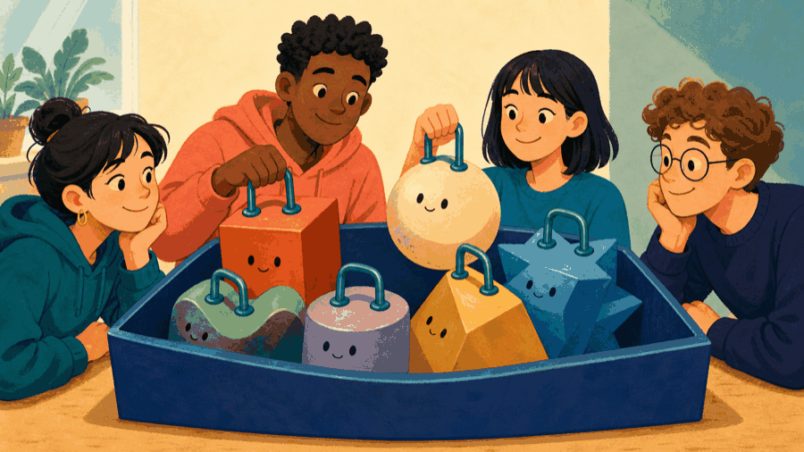
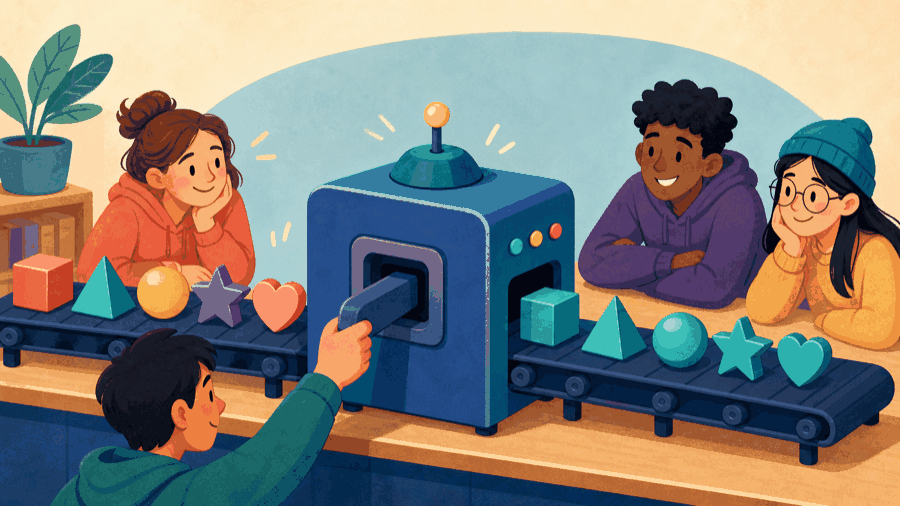
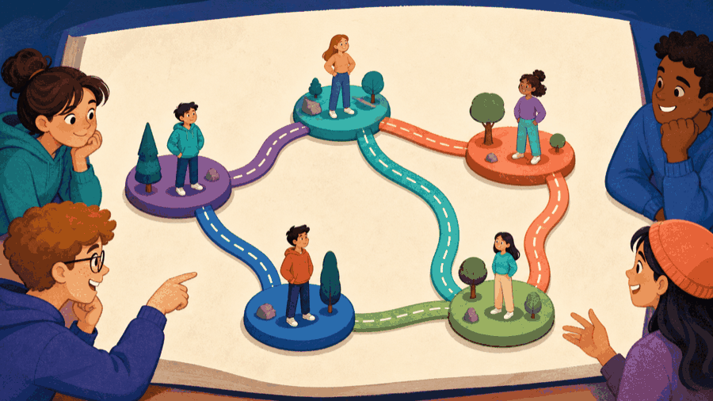

# Lecture 21: Separate polymorphism, ownership, and graph links ## Store varied behavior behind one safe interface **Instructor:** [Dr. Debasish Pattanayak](https://drdebmath.github.io)
## Polymorphism lets one structure store varied behavior. · Store heterogeneous shapes safely A container of owning base pointers becomes an extensible data structure whose aggregation algorithm is independent of concrete types. ~~~cpp #include <memory> #include <vector> class Shape { public: virtual double area() const = 0; virtual ~Shape() = default; }; double totalArea(const std::vector<std::unique_ptr<Shape>>& shapes) { double total = 0; for (const auto& shape : shapes) total += shape->area(); return total; } ~~~ **Takeaways** - Polymorphism lets one structure store varied behavior. - unique_ptr makes ownership explicit. - The aggregation algorithm depends only on the interface.
## A heterogeneous container owns varied objects through one interface ~~~cpp std::vector<std::unique_ptr<Shape>> shapes; shapes.push_back(std::make_unique<Circle>(2.0)); shapes.push_back(std::make_unique<Square>(3.0)); ~~~ Concrete types differ; ownership and the operation contract are uniform.
## Algorithms stay reusable through promised interface operations ~~~cpp double totalArea(const std::vector<std::unique_ptr<Shape>>& shapes) { double total = 0.0; for (const auto& shape : shapes) total += shape->area(); return total; } ~~~ Adding a new shape does not change this traversal.
## The objects do not match in shape, but they share a promise <figure class="course-meme-figure"> <p></p> <figcaption> <p class="course-meme-setup"><strong>Setup</strong> The objects do not match in shape, but they do share a promise.</p> <p class="course-meme-punchline"><strong>Punchline</strong> Many shapes, one handle, one ownership rule for all of them.</p> </figcaption> </figure>
## An object graph separates entities from their relationships ~~~text [Indore] --rail--> [Ujjain] | road v [Dewas] ~~~ Vertices model entities; edges model relationships. The graph is a structure, not an external visualization service.
## Graph storage follows the operations the application needs - Adjacency list: store outgoing neighbors for each vertex. - Edge list: store relationships as records. - Matrix: direct pair lookup but quadratic storage. Polymorphism is useful only when vertex or edge behavior genuinely varies.
## The algorithm asks for an operation, not a family photo <figure class="course-meme-figure"> <p></p> <figcaption> <p class="course-meme-setup"><strong>Setup</strong> The algorithm asks for an operation, not a family photo.</p> <p class="course-meme-punchline"><strong>Punchline</strong> Promise the operation, and the machine never opens the box.</p> </figcaption> </figure>
## Ownership stays independent from graph connectivity Let the graph own vertices and edges with smart pointers. Store non-owning IDs or indices for relationships when possible. Avoid cycles of shared ownership; graph connectivity is not the same as memory ownership.
## Game evolution: Actors share a graph without sharing ownership | Today's concept | Exact game part enabled | |---|---| | polymorphic container and object graph | own Snake and Cleaner together and store non-owning links | ~~~cpp #include <cassert> #include <memory> #include <vector> struct Actor { virtual char mark() const=0; virtual ~Actor()=default; }; struct Snake:Actor { char mark() const override{return 'S';} }; struct Cleaner:Actor { char mark() const override{return 'C';} }; int main(){ std::vector<std::unique_ptr<Actor>> actors; actors.push_back(std::make_unique<Snake>()); actors.push_back(std::make_unique<Cleaner>()); std::vector<std::vector<std::size_t>> links{{1},{0}}; assert(actors[0] && actors[1]); for(const auto& xs:links) for(auto v:xs) assert(v<actors.size()); } ~~~ **Ownership invariant:** the container owns actors; connectivity is represented separately by valid indices. **Next unlock · L22:** choose and compare route and task-selection policies over this world.
## Add one actor without changing the controller Add a <code>WeightedEdge</code> with a cost and a <code>ScheduledEdge</code> with departure time. Write one traversal that prints every edge through the base interface, then identify which operations do not require polymorphism.
## The links know who is connected, not who owns whom <figure class="course-meme-figure"> <p></p> <figcaption> <p class="course-meme-setup"><strong>Setup</strong> The links know who is connected, not who owns whom.</p> <p class="course-meme-punchline"><strong>Punchline</strong> A relationship map, not an ownership receipt.</p> </figcaption> </figure>
## Polymorphism, ownership, and graph links stay independently testable - Heterogeneous containers combine a base contract with safe ownership. - Algorithms depend on operations, not concrete type names. - Object graphs separate entities from relationships. - Pick adjacency representation from required operations. - Keep graph links separate from ownership links.
## Verify Store heterogeneous shapes safely with a claim, trace, boundary, and improvement Use the practical example as a small experiment. Before you leave, make the reasoning visible: - **Claim:** Polymorphism lets one structure store varied behavior. - **Trace:** name the state that changes and the observation that would confirm it. - **Boundary:** choose one smallest, largest, empty, or invalid input that could expose a defect. - **Improvement:** explain one change that would make the solution clearer or safer. ### Exit ticket Choose one problem to solve now and two to attempt in the lab: - Implement Circle and Rectangle classes for the shape container. - Create a polymorphic graph whose edges compute different travel costs. - Write a deep-copy operation for a container of cloneable objects.
## Explain Store heterogeneous shapes safely without opening the code Explain today’s idea to a partner without opening the code: 1. State the input, output, and one rule the solution must preserve. 2. Point to the operation that makes progress or changes the state. 3. Name the first test you would run after changing the implementation. If the explanation needs “and then another unrelated thing,” split the design before you code.
## Solve five problems to transfer Store heterogeneous shapes safely **IC151 lab practice · 5 problems** 1. Implement Circle and Rectangle classes for the shape container. 1. Create a polymorphic graph whose edges compute different travel costs. 1. Write a deep-copy operation for a container of cloneable objects. 1. Add a new shape without modifying the total-area algorithm. 1. Compare a polymorphic container with std::variant for this problem. Reaching this set marks the lecture as studied in this browser. [Open the IC151 lab setup and batch schedule](ic151.html).
## Store Snake and Cleaner objects together while keeping their relationships safe. **Studio thread:** Own a mixed actor world | Ask | Today’s answer | |---|---| | **Problem** | Store Snake and Cleaner objects together while keeping their relationships safe. | | **Model** | Actors own behavior; graph links describe relationships but do not own actors. | | **Represent** | A vector of unique_ptr-owned actors plus adjacency lists of non-owning indices. | | **Solve** | Traverse actors through one interface and validate every stored relationship. | | **Verify** | Check non-null ownership, in-range links, isolated actors, and cyclic links. | | **Improve** | Keep ownership and graph connectivity independent so either can change safely. | **Technique lens:** polymorphic containers and object-graph modeling **Compare:** owning smart pointers versus non-owning indices